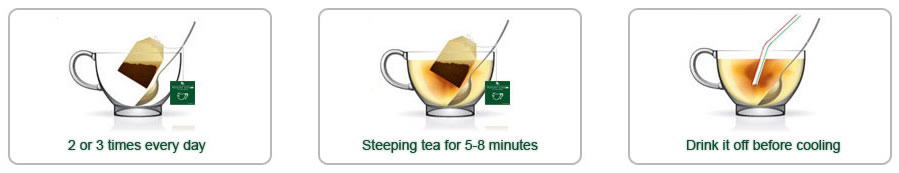

Pallas weight-loss tea is health food, which is made of green tea, malt, radish seed, lily flower, lotus leaf, and the like. According to clinic studies, our product was proven effective in one of the largest clinical studies ever performed on a non-prescription weight-loss product. The effective component and content are Nuciferine, and Tea polyphenol.

It couldn't be simpler. Make the tea and drink it daily! Just follow these simple instructions: Pour 350-500ml (2-3 cups) of fresh boiled water into a teapot, Let the tea steep for 5-8 minutes and then drink it off when it is still hot. Throw away tea bag before drinking, do not reuse the tea bag. It is best that drinking half an hour after lunch or supper. Please note do not drink it on an empty stomach.